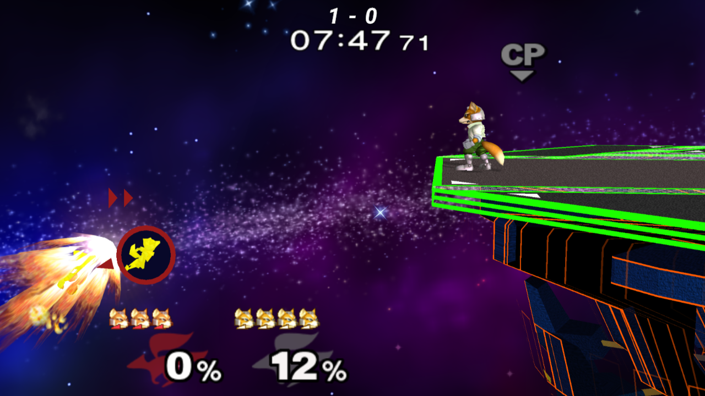

On the game window
Overlays right on the Dolphin game window, on Windows.


On Windows, Froggi draws your overlays right on the Dolphin game window. Turn on Inject on an overlay and it shows up in the game.
Overlays right on the Dolphin game window, on Windows.

On Windows, Froggi draws your overlays right on the Dolphin game window. Turn on Inject on an overlay and it shows up in the game.